Lesson 8 — Support & Resistance
Step 1 of 14
Welcome to Lesson 8
Support & Resistance
Congratulations on reaching Lesson 8! By completing the previous lessons, you have learned the basics of the Forex market, how currency pairs move, how charts work, and how to read candlesticks. Now it's time to learn one of the most important concepts in technical analysis—Support and Resistance.
Almost every professional trader begins their chart analysis by identifying Support and Resistance levels. Before placing a trade, they first ask a simple question: "Where is price likely to react?" The answer usually lies at Support or Resistance.
These areas help traders understand where buyers may become active, where sellers may take control, and where the market could reverse, pause, or continue its trend. Whether you trade Forex, Gold, Crypto, Stocks, or Indices, Support and Resistance are used in every financial market around the world.
In this lesson, you won't just memorize definitions. You will learn why these levels work, the psychology behind them, how professionals draw them correctly, and how to avoid the common mistakes that many beginners make.
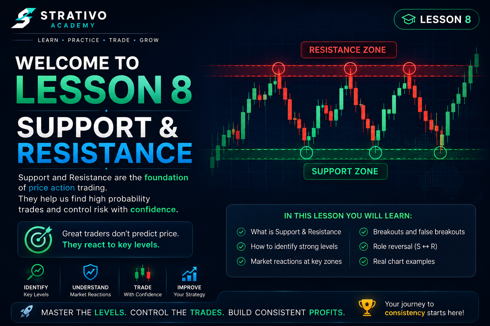
⚠️ Important Before You Start
Do not try to memorize Support and Resistance like school notes. Instead, focus on understanding why price reacts at certain areas.
- ✔ Learn the psychology behind every price movement.
- ✔ Practice drawing levels on historical charts.
- ✔ Don't rush into live trading.
- ✔ Build confidence through practice first.
📚 What You Will Learn
- ✔ What Support is.
- ✔ What Resistance is.
- ✔ Why price reacts at these areas.
- ✔ Why Support and Resistance are zones instead of single lines.
- ✔ How to draw strong levels correctly.
- ✔ Strong vs Weak Support & Resistance.
- ✔ Role Reversal.
- ✔ Bounce Trading.
- ✔ Breakout Trading.
- ✔ False Breakouts.
- ✔ Real chart analysis.
- ✔ Hands-on practice before the quiz.
⭐ Why This Lesson Matters
Support and Resistance are the foundation of technical analysis. Every advanced trading concept—including Price Action, Supply & Demand, Order Blocks, Liquidity, Smart Money Concepts, Trend Trading, and Breakout Strategies—builds upon these levels.
If you understand Support and Resistance properly, every future lesson in this course will become much easier to understand.
🎯 After Completing This Lesson You Will Be Able To
- ✔ Draw Support correctly.
- ✔ Draw Resistance correctly.
- ✔ Identify important market zones.
- ✔ Recognize strong and weak levels.
- ✔ Understand buyer and seller psychology.
- ✔ Spot potential market reversals.
- ✔ Avoid common beginner mistakes.
- ✔ Read charts with greater confidence.
💡 Strativo Academy Tip
Open TradingView after completing this lesson and practice drawing Support and Resistance on old charts. Don't worry about taking trades yet. Focus on improving your chart-reading skills first. Consistent practice is what separates beginners from professional traders.
It rewards people who prepare."
— Strativo Academy
📉 What is Support?
Support is one of the most important concepts in technical analysis. It is an area on the chart where the price has a higher chance of stopping its fall and moving upward again because buyers become more active.
Think of Support as a floor beneath the market. Just as a floor supports your body and prevents you from falling through, a Support area often prevents price from falling further.
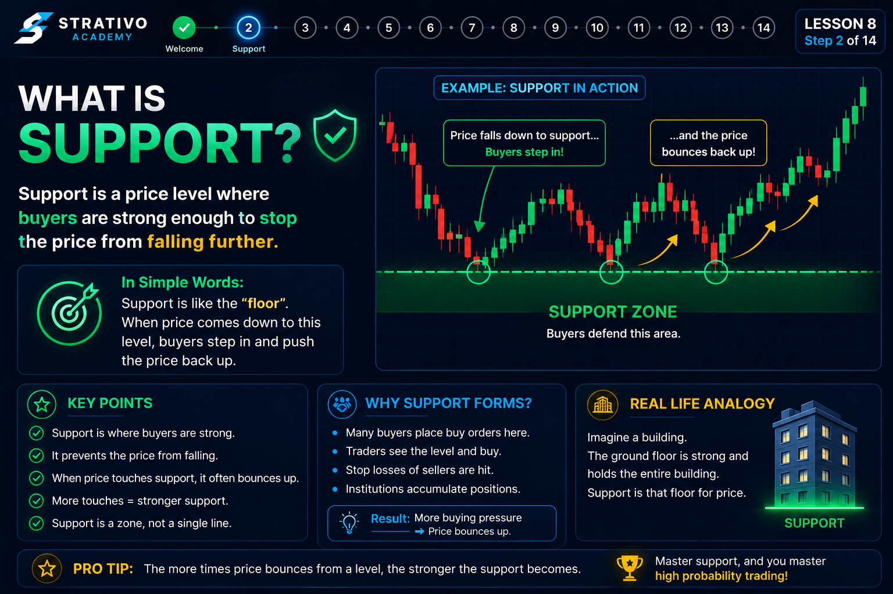
📚 Simple Definition
Support is a price area where buying pressure becomes stronger than selling pressure, causing the market to slow down, stop falling, or reverse upward.
🧠 Market Psychology
Imagine EUR/USD falls from 1.1200 to 1.1000. Many traders believe that 1.1000 is a good buying price.
As price reaches this area:
- ✔ Buyers begin placing Buy orders.
- ✔ Sellers start closing their Sell trades.
- ✔ Buying pressure increases.
- ✔ Selling pressure decreases.
Because there are now more buyers than sellers, price often reacts upward from this area.
🏠 Real-Life Example
Imagine dropping a rubber ball onto the floor.
The floor stops the ball from falling and pushes it back upward.
Support works in a very similar way. The market falls until buyers become strong enough to push the price higher.
💹 Forex Example
Suppose GBP/USD falls three different times to 1.2500.
Each time the price reaches this level, buyers enter the market and the price rises again.
This tells us that 1.2500 is acting as a Support level.
❌ Common Beginner Mistake
Many beginners think Support guarantees that price will always go up.
This is not true.
Support increases the probability of a bounce, but it does not guarantee one. Sometimes Support breaks and the market continues falling.
💡 Pro Trader Tip
Professional traders rarely buy the instant price touches Support.
They wait for confirmation, such as bullish candlesticks, strong buying pressure, or other signals before entering a trade.
📌 Remember
- ✔ Support is where buyers become stronger.
- ✔ Price may bounce upward.
- ✔ Support is an area, not a guarantee.
- ✔ Always wait for confirmation before trading.
🎯 Key Takeaway
Support is not a magic line that always stops price. It is an area where buying pressure often becomes stronger than selling pressure, increasing the chance of an upward reaction.
📈 What is Resistance?
Now that you understand Support, it's time to learn Resistance. Resistance is simply the opposite of Support. Instead of stopping the market from falling, Resistance is an area where the price has a higher chance of stopping its rise and moving downward because sellers become more active.
Imagine a ceiling above the market. Just as a ceiling stops you from moving higher, a Resistance area often prevents price from moving further upward.
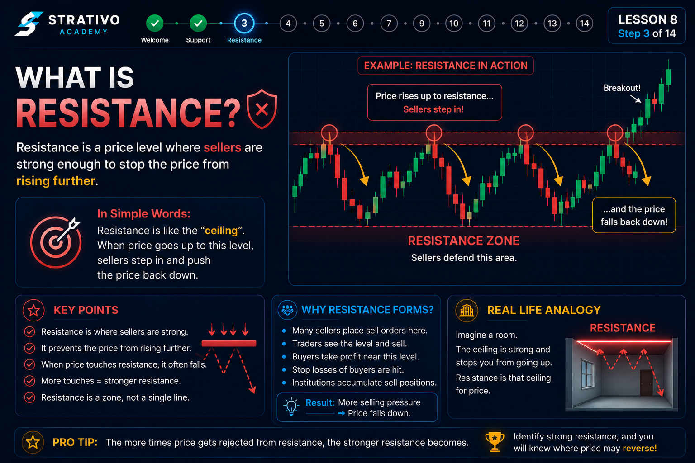
📚 Simple Definition
Resistance is a price area where selling pressure becomes stronger than buying pressure, causing the market to slow down, stop rising, or reverse downward.
🧠 Market Psychology
Imagine EUR/USD rises from 1.1000 to 1.1200. Many traders believe that 1.1200 is a good place to sell.
As price reaches this area:
- ✔ Sellers begin opening Sell orders.
- ✔ Buyers begin taking profits.
- ✔ Selling pressure increases.
- ✔ Buying pressure becomes weaker.
Because sellers become stronger than buyers, price often reacts downward from this area.
🏠 Real-Life Example
Imagine throwing a rubber ball toward the ceiling.
The ball rises until it hits the ceiling, then falls back down.
Resistance behaves in a similar way. Price rises until sellers become strong enough to push the market lower.
💹 Forex Example
Suppose GBP/USD rises to 1.2800 three different times.
Each time price reaches this level, sellers enter the market and the price falls again.
This tells us that 1.2800 is acting as a Resistance level.
❌ Common Beginner Mistake
Many beginners believe Resistance will always force the market to move downward.
That is incorrect.
Sometimes buyers become stronger than sellers and price breaks above Resistance. This is called a breakout, which we will study later in this lesson.
💡 Pro Trader Tip
Professional traders usually wait for confirmation before selling at Resistance.
They look for bearish candlestick patterns, rejection wicks, lower highs, or other signs that sellers are taking control.
📌 Remember
- ✔ Resistance is where sellers become stronger.
- ✔ Price may reverse downward.
- ✔ Resistance is an area, not a guarantee.
- ✔ Wait for confirmation before entering a trade.
🎯 Key Takeaway
Resistance is an area where selling pressure often becomes stronger than buying pressure, increasing the probability of a downward reaction. However, no Resistance level is perfect, so traders should always wait for confirmation before trading.
🟩 Support & Resistance Are Zones, Not Lines
One of the biggest mistakes new traders make is drawing Support and Resistance as a single thin line. While this may look neat on a chart, it does not reflect how the market actually behaves.
The Forex market is driven by millions of buyers and sellers placing orders at slightly different prices. Because of this, price rarely reacts at one exact level. Instead, it reacts within an area. This is why professional traders think in terms of zones rather than exact lines.
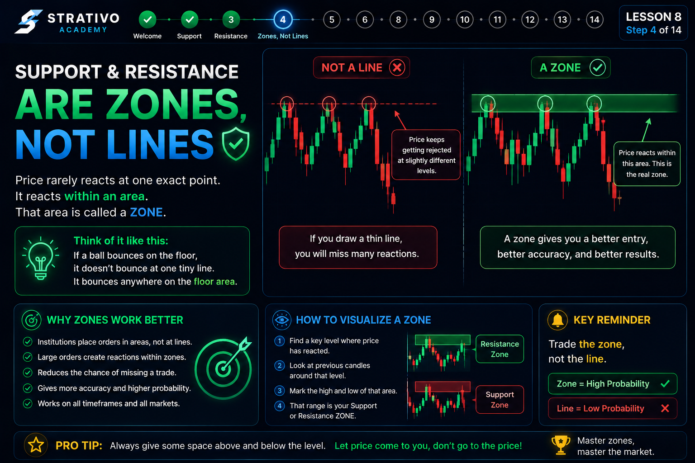
📚 What is a Zone?
A zone is a small price area where buyers or sellers are likely to become active.
Instead of expecting price to reverse at one exact number, traders allow a small range where the reaction may happen.
This makes chart analysis much more realistic and accurate.
🧠 Why Do Zones Work?
Imagine 1,000 traders want to buy EUR/USD.
Not everyone will place their order at exactly 1.10000.
- Trader A buys at 1.0998
- Trader B buys at 1.1000
- Trader C buys at 1.1002
- Trader D buys at 1.1004
Together these orders create a buying zone, not a single line.
🏠 Real-Life Example
Imagine a parking space.
You don't have to park your car on one exact painted point. You simply need to park inside the parking area.
Support and Resistance work in a similar way. Price only needs to enter the zone for buyers or sellers to begin reacting.
💹 Forex Example
Suppose EUR/USD reaches 1.1000 several times.
Sometimes price reverses at 1.0998, sometimes at 1.1002, and sometimes at 1.1005.
Instead of drawing three different lines, professional traders draw one Support zone covering the entire area.
❌ Common Beginner Mistake
Beginners often become frustrated because price moves a few pips beyond their Support or Resistance line before reversing.
They think their analysis was wrong.
In reality, the market simply reacted within the zone instead of on the exact line.
💡 Pro Trader Tip
Draw your Support and Resistance as rectangles instead of thin horizontal lines whenever possible.
This gives price room to move naturally and reduces false trading decisions caused by tiny market fluctuations.
📌 Remember
- ✔ Price rarely reacts at one exact level.
- ✔ Buyers and sellers create areas, not points.
- ✔ Think in zones, not lines.
- ✔ Small breaks of a line do not always mean the level has failed.
🎯 Key Takeaway
Professional traders focus on price zones because markets are driven by groups of orders placed at different prices. Learning to identify zones instead of exact lines will make your chart analysis more accurate and more realistic.
✏️ How to Draw Support & Resistance
Knowing what Support and Resistance are is only the first step. The next skill every trader must learn is how to identify and draw these important zones correctly on a chart.
Professional traders do not randomly place Support and Resistance. They carefully study how price behaved in the past to find areas where buyers or sellers repeatedly took control.
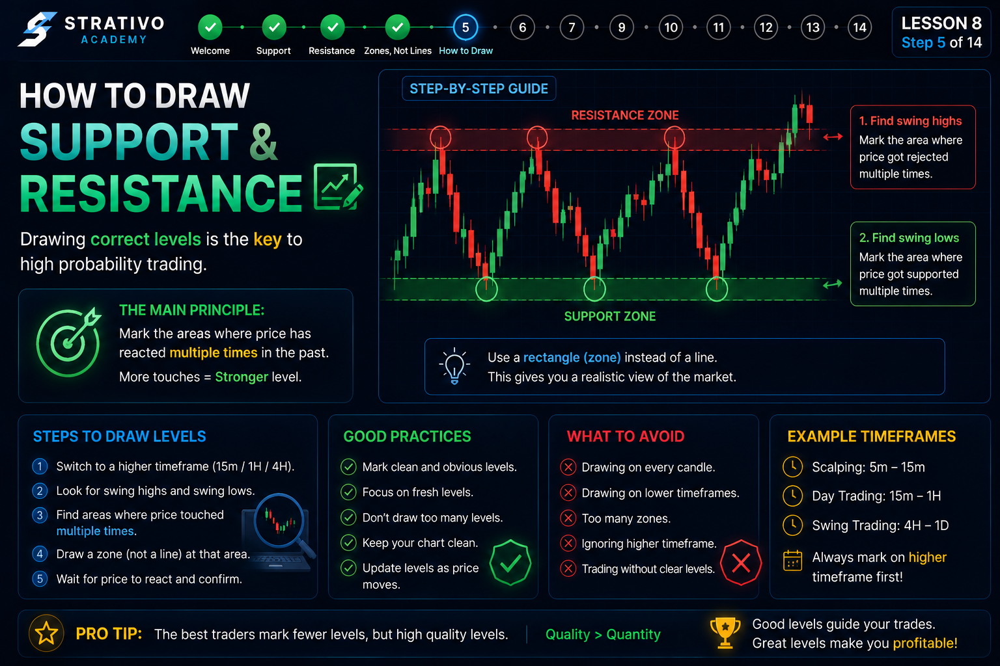
📚 Step-by-Step Guide
- ✔ Open your trading chart.
- ✔ Zoom out to see more price history.
- ✔ Look for areas where price reversed multiple times.
- ✔ Mark those areas using a rectangle (zone).
- ✔ Do not draw extremely wide zones.
- ✔ Wait for future price reactions before trading.
🧠 What Should You Look For?
A good Support or Resistance zone usually has several signs that make it important.
- ✔ Multiple price touches.
- ✔ Strong market reversals.
- ✔ Long rejection wicks.
- ✔ Large bullish or bearish candles.
- ✔ High trading activity around the area.
The more evidence you have, the stronger the level becomes.
🏠 Real-Life Example
Imagine walking through a city every day.
If you notice that traffic always slows down at one particular intersection, you know that area is important.
Support and Resistance work the same way. If price keeps reacting at one area, that area deserves your attention.
💹 Forex Example
Imagine USD/JPY reaches the 145.00 area four different times.
Every time price reaches that zone, buyers push the market higher again.
Instead of drawing four different lines, draw one Support zone that covers the entire reaction area.
❌ Common Beginner Mistakes
- ❌ Drawing too many Support and Resistance levels.
- ❌ Marking every small candle reaction.
- ❌ Drawing extremely wide zones.
- ❌ Ignoring the higher timeframe.
- ❌ Trading immediately after drawing a level without confirmation.
💡 Pro Trader Tip
Always begin your analysis from a higher timeframe such as the Daily or 4-Hour chart.
Strong Support and Resistance levels found on higher timeframes are usually more reliable than levels found only on lower timeframes.
📌 Golden Rules
- ✔ Draw zones, not lines.
- ✔ Focus on important price reactions.
- ✔ Use multiple touches for confirmation.
- ✔ Higher timeframe levels are usually stronger.
- ✔ Wait for confirmation before entering a trade.
🎯 Key Takeaway
Drawing Support and Resistance is about identifying areas where the market has repeatedly reacted in the past. The goal is not to predict the future perfectly, but to recognize locations where price has a higher probability of reacting again.
💪 Strong vs Weak Support & Resistance Levels
After learning how to draw Support and Resistance, the next question is: "Are all levels equally important?"
The answer is No. Some Support and Resistance levels are very reliable, while others are weak and easily broken. Learning to tell the difference helps you avoid poor trading decisions and focus only on high-probability setups.
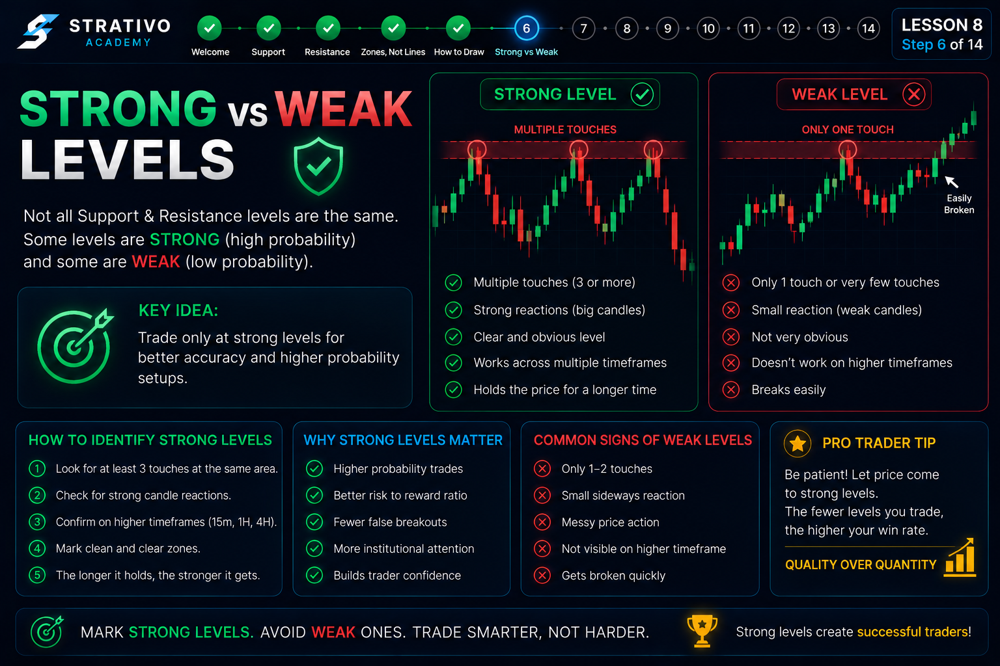
📚 What Makes a Level Strong?
A strong Support or Resistance level has proven itself by stopping or reversing price multiple times in the past.
- ✔ Price has reacted several times.
- ✔ Strong bullish or bearish reversals occurred.
- ✔ Large rejection wicks are visible.
- ✔ The level is visible on higher timeframes.
- ✔ Many traders are watching the same area.
📉 What Makes a Level Weak?
Weak levels have very little market history and do not show strong buying or selling pressure.
- ❌ Only one price reaction.
- ❌ Small candles with little momentum.
- ❌ Very recent level with no confirmation.
- ❌ No clear rejection from buyers or sellers.
- ❌ Difficult to identify on higher timeframes.
🏠 Real-Life Example
Imagine two bridges crossing a river.
One bridge is built with strong steel and has carried heavy traffic safely for many years. The other is old, weak, and has only been used a few times.
Which bridge would you trust more?
Strong Support and Resistance levels are like the stronger bridge— they have already proven they can handle pressure.
💹 Forex Example
Imagine EUR/USD reaches the 1.1000 area five different times over several weeks, and each time buyers push the price higher.
Compare that with another level where price only reacted once.
The first level is much stronger because it has a history of repeated market reactions.
❌ Common Beginner Mistakes
- ❌ Treating every level as equally important.
- ❌ Trading after only one touch.
- ❌ Ignoring higher timeframe levels.
- ❌ Drawing too many weak zones.
- ❌ Forgetting to wait for confirmation.
💡 Pro Trader Tip
Professional traders don't look for the highest number of Support and Resistance levels—they look for the highest quality levels.
One strong level is usually more valuable than ten weak ones.
📌 Quick Comparison
| Strong Level | Weak Level |
|---|---|
| Multiple reactions | One reaction only |
| Large rejection candles | Small weak candles |
| Visible on higher timeframes | Visible only on lower timeframes |
| High probability | Lower probability |
🎯 Key Takeaway
Every Support or Resistance level deserves attention, but not every level deserves a trade. The strongest levels are those with repeated reactions, clear rejection, and confirmation from higher timeframes.
🔄 Role Reversal: Support Becomes Resistance & Resistance Becomes Support
One of the most important concepts in technical analysis is that Support and Resistance can change roles after a breakout.
This is known as Role Reversal. It happens because traders react differently after a key price level is broken.
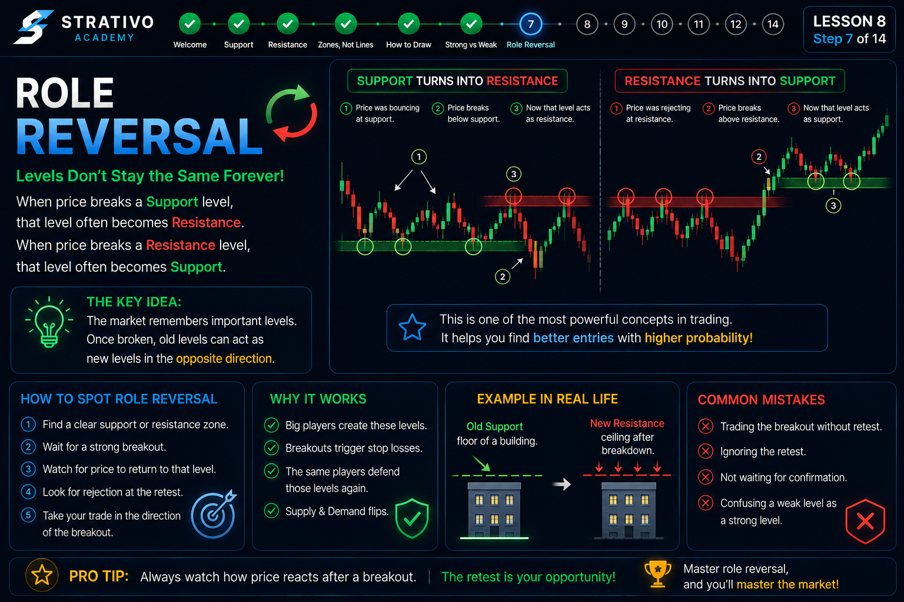
📚 Resistance Becomes Support
Imagine price repeatedly fails to move above a Resistance zone. Eventually, buyers become stronger and break above it.
When price later returns to that same area, the old Resistance often acts as a new Support because buyers defend the breakout.
📚 Support Becomes Resistance
The opposite can also happen.
If price breaks below a strong Support zone, sellers take control. When price later moves back to that area, the old Support often acts as a new Resistance, stopping the market from moving higher.
🧠 Why Does This Happen?
Market psychology changes after a breakout.
- ✔ Some traders close losing positions.
- ✔ New traders join the breakout.
- ✔ Buyers and sellers change their expectations.
- ✔ The old level becomes important again from the opposite side.
This change in trader behavior creates the role reversal.
🏠 Real-Life Example
Imagine a door that was locked for many days.
Once someone unlocks it and walks through, the door can now be used from the opposite direction as well.
In the market, once price breaks an important level, that same area often serves a new purpose.
💹 Forex Example
EUR/USD cannot break above 1.1200 for several days.
Finally, buyers push price above 1.1200.
A few hours later, price falls back to 1.1200, finds buyers again, and continues moving upward.
The old Resistance has now become new Support.
❌ Common Beginner Mistakes
- ❌ Assuming every breakout is real.
- ❌ Trading immediately after a breakout without waiting for a retest.
- ❌ Ignoring false breakouts.
- ❌ Forgetting that confirmation is still required.
💡 Pro Trader Tip
Many professional traders prefer to wait for a breakout and then a retest of the broken level before entering a trade.
This approach can provide stronger confirmation than trading the initial breakout alone.
📌 Remember
- ✔ Old Resistance can become new Support.
- ✔ Old Support can become new Resistance.
- ✔ Wait for confirmation after a breakout.
- ✔ Not every breakout leads to a role reversal.
🎯 Key Takeaway
Role Reversal is a powerful concept that helps traders understand how the market behaves after breaking important levels. Instead of chasing every breakout, watch how price reacts when it returns to the broken zone.
🚀 Breakouts vs False Breakouts
A breakout happens when price moves beyond an important Support or Resistance zone with enough strength to continue in the same direction. However, not every breakout is real. Sometimes price briefly moves beyond a level and then quickly reverses back. This is called a false breakout.
Learning to recognize the difference can help you avoid entering trades too early.
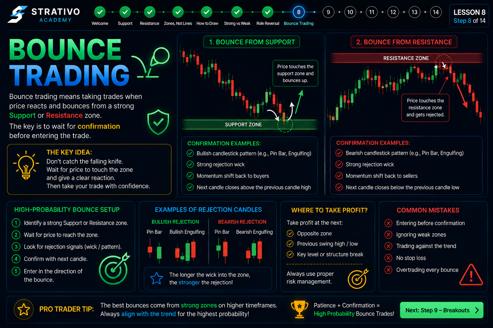
📚 What is a Real Breakout?
A real breakout occurs when buyers or sellers gain enough momentum to push price beyond a key level and continue moving in that direction.
- ✔ Strong momentum.
- ✔ Large breakout candle.
- ✔ Price closes beyond the zone.
- ✔ Follow-through in the breakout direction.
📚 What is a False Breakout?
A false breakout happens when price briefly moves above Resistance or below Support but cannot continue.
Instead, price quickly returns inside the zone, trapping traders who entered too early.
- ❌ Short move beyond the level.
- ❌ Weak follow-through.
- ❌ Price quickly reverses.
- ❌ Often traps impatient traders.
🏠 Real-Life Example
Imagine someone opens a door, steps outside for a moment, then immediately comes back inside.
They didn't truly leave—they only made a brief move.
A false breakout behaves in a similar way. Price moves outside the level but fails to continue.
💹 Forex Example
EUR/USD breaks above a Resistance zone at 1.1200.
Many traders immediately buy.
A few candles later, price falls back below 1.1200 and continues downward. The breakout failed, making it a false breakout.
❌ Common Beginner Mistakes
- ❌ Buying or selling immediately after every breakout.
- ❌ Ignoring candle closes.
- ❌ Trading without confirmation.
- ❌ Chasing the market after a large candle.
💡 Pro Trader Tip
Many professional traders wait for the breakout candle to close and often wait for a retest of the broken level before entering a trade.
Waiting for confirmation can reduce the chance of being trapped by a false breakout.
📌 How to Increase Confidence
- ✔ Wait for candle closes.
- ✔ Look for strong momentum.
- ✔ Watch for a successful retest.
- ✔ Combine with other forms of analysis.
🎯 Key Takeaway
Not every breakout is a trading opportunity. Strong breakouts usually show momentum and follow-through, while false breakouts quickly return inside the previous zone. Patience and confirmation are often more valuable than entering first.
📊 Trading with Support & Resistance
Now that you understand how to identify Support and Resistance, it's time to learn how traders use these zones when planning trades.
Support and Resistance do not tell you exactly what the market will do. Instead, they highlight areas where price has a higher probability of reacting. Successful traders use these zones together with confirmation before making a trading decision.
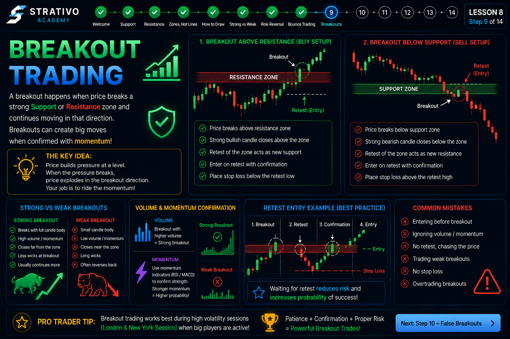
📚 Buying Near Support
When price approaches a strong Support zone, traders watch for signs that buyers are taking control.
- ✔ Bullish candlestick patterns.
- ✔ Strong rejection wicks.
- ✔ Higher lows forming.
- ✔ Increasing buying momentum.
These signs may increase confidence that price could move upward.
📚 Selling Near Resistance
When price reaches a strong Resistance zone, traders look for evidence that sellers are becoming stronger.
- ✔ Bearish candlestick patterns.
- ✔ Long upper rejection wicks.
- ✔ Lower highs forming.
- ✔ Increasing selling pressure.
These signals may suggest that price could move lower.
🧠 Wait for Confirmation
A Support or Resistance zone is not an automatic buy or sell signal.
Instead of entering immediately when price touches a zone, many experienced traders wait for confirmation from price action before opening a trade.
🏠 Real-Life Example
Imagine crossing a busy road.
Even if the traffic light turns green, you still look left and right before crossing.
In trading, confirmation is like checking the road before you move. It helps reduce unnecessary risk.
💹 Forex Example
GBP/USD reaches a strong Support zone that has held several times.
Instead of buying immediately, a trader waits for a bullish engulfing candle to appear.
The candlestick provides additional confirmation that buyers may be taking control.
❌ Common Beginner Mistakes
- ❌ Buying every time price touches Support.
- ❌ Selling every time price touches Resistance.
- ❌ Ignoring confirmation signals.
- ❌ Entering trades because of fear of missing out (FOMO).
- ❌ Forgetting that no setup guarantees success.
💡 Pro Trader Tip
The best trading opportunities often occur when several factors support the same idea—for example, a strong Support zone, a bullish candlestick pattern, and an overall uptrend.
When multiple signals align, traders call this confluence, which can increase confidence in a setup.
📌 Trading Checklist
- ✔ Is the Support or Resistance level strong?
- ✔ Has price reacted there before?
- ✔ Do you have confirmation?
- ✔ Does the trade fit the overall market trend?
- ✔ Have you planned your risk before entering?
🎯 Key Takeaway
Support and Resistance help traders identify areas of interest, but successful trading depends on patience, confirmation, and proper risk management. Use these zones as part of a complete trading plan rather than relying on them alone.
🕒 Multi-Timeframe Support & Resistance
Not all Support and Resistance levels have the same importance. Levels identified on higher timeframes, such as the Daily or 4-Hour chart, are often watched by more traders and may carry greater significance than levels found only on lower timeframes.
Many experienced traders first identify major zones on higher timeframes and then switch to lower timeframes to look for confirmation before entering a trade.
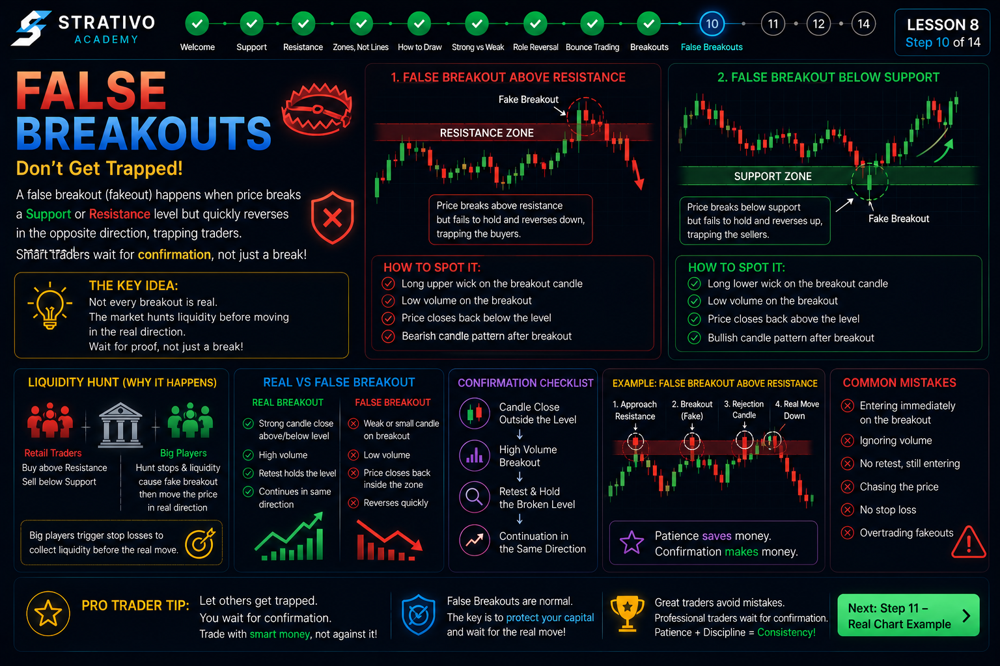
📚 Why Higher Timeframes Matter
Higher timeframe charts contain more historical price data and often show the most important Support and Resistance zones.
- ✔ Daily levels are often stronger than 5-minute levels.
- ✔ 4-Hour zones are watched by many swing traders.
- ✔ Higher timeframe zones often influence lower timeframe price movements.
- ✔ Major market reversals frequently begin at higher timeframe levels.
📊 A Simple Multi-Timeframe Process
- 1️⃣ Open the Daily chart and mark major Support and Resistance zones.
- 2️⃣ Move to the 4-Hour chart and refine those zones.
- 3️⃣ Switch to the 1-Hour or 15-Minute chart.
- 4️⃣ Wait for confirmation before entering a trade.
This approach helps traders see the bigger picture before focusing on precise entry opportunities.
🏠 Real-Life Example
Imagine you're planning a road trip.
First, you look at a country map to understand the overall route. Then you use a city map to find the exact street.
Trading works in a similar way. Higher timeframes provide the overall direction, while lower timeframes help you plan a more precise entry.
💹 Forex Example
EUR/USD reaches a Daily Support zone that has held several times over the past few months.
Instead of buying immediately, a trader switches to the 15-minute chart and waits for a bullish candlestick pattern before entering.
This combines higher timeframe context with lower timeframe confirmation.
❌ Common Beginner Mistakes
- ❌ Trading using only the 1-minute or 5-minute chart.
- ❌ Ignoring strong Daily or 4-Hour zones.
- ❌ Drawing different levels on every timeframe without prioritizing them.
- ❌ Entering trades without checking the bigger picture.
💡 Pro Trader Tip
Begin every trading session by marking the important Support and Resistance zones on higher timeframes first.
Then allow lower timeframe price action to guide your entry. This creates a more structured trading process.
📌 Best Timeframe Guide
| Timeframe | Main Purpose |
|---|---|
| Daily (D1) | Major market structure and key zones. |
| 4-Hour (H4) | Strong Support & Resistance confirmation. |
| 1-Hour (H1) | Trade planning. |
| 15-Minute (M15) | Entry confirmation. |
🎯 Key Takeaway
Multi-timeframe analysis helps traders combine the bigger market picture with precise entry opportunities. Higher timeframe Support and Resistance zones often carry more weight, while lower timeframes can provide confirmation before entering a trade.
⚠️ Common Mistakes with Support & Resistance
Support and Resistance are powerful tools, but they are often used incorrectly. Many beginner traders make the same mistakes, leading to poor trading decisions.
By understanding these common mistakes, you can build better trading habits and improve the quality of your analysis.
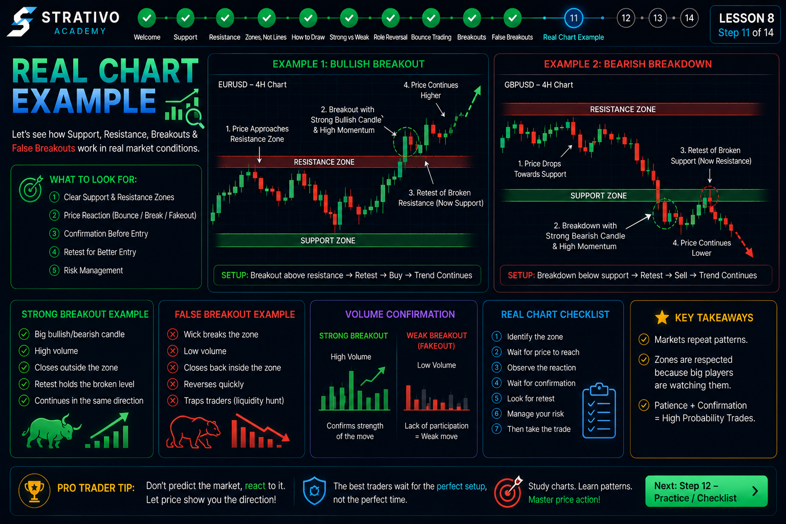
❌ Mistake 1: Drawing Too Many Levels
Some traders mark every small price reaction on the chart. This creates confusion and makes it difficult to identify the most important Support and Resistance zones.
Focus only on the major areas where price has reacted multiple times.
❌ Mistake 2: Treating Zones as Exact Prices
Support and Resistance are areas, not exact prices.
Price may move slightly above or below a zone before reacting. This does not automatically mean the level has failed.
❌ Mistake 3: Trading Without Confirmation
Entering a trade immediately when price touches a Support or Resistance zone can be risky.
Wait for confirmation from price action before making a decision.
❌ Mistake 4: Ignoring the Higher Timeframe
A strong Daily Support level may be more significant than a weak 5-minute level.
Always check the higher timeframe before making a trade.
❌ Mistake 5: Believing Every Level Will Hold
No Support or Resistance level is guaranteed to stop price.
Markets change, and strong momentum can break even important levels.
🏠 Real-Life Example
Imagine using an old map to drive through a modern city.
Roads change over time, so relying on outdated information can lead you in the wrong direction.
Similarly, traders must adapt to current market conditions instead of assuming every historical level will always work.
💡 Pro Trader Tips
- ✔ Keep your charts clean and simple.
- ✔ Focus on quality, not quantity.
- ✔ Wait for confirmation before entering.
- ✔ Always check higher timeframes.
- ✔ Accept that no setup has a 100% success rate.
🎯 Key Takeaway
Most mistakes happen because traders rush their decisions. Patience, confirmation, and disciplined chart analysis are more important than trying to predict every market move.
🏆 Best Practices & Pro Tips
Throughout this lesson, you've learned what Support and Resistance are, how to draw them, how to identify strong levels, and how to avoid common mistakes.
The next step is developing good trading habits. Professional traders follow a consistent process every time they analyze a chart instead of making random decisions.
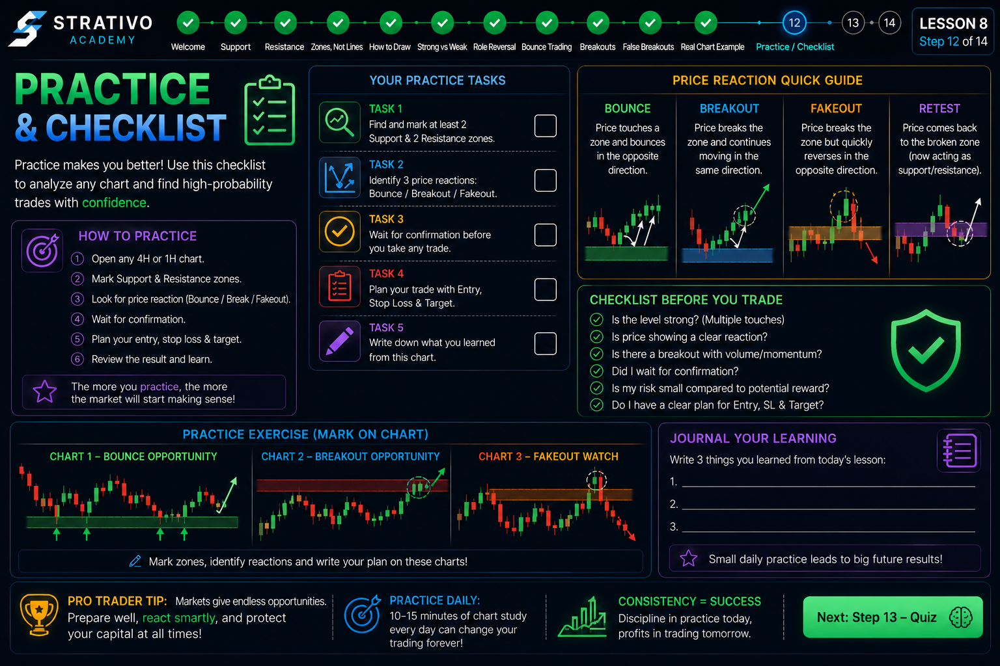
✅ Best Practice 1: Start with Higher Timeframes
Begin your analysis on the Daily or 4-Hour chart to identify the most important Support and Resistance zones.
Then move to lower timeframes for confirmation and trade planning.
✅ Best Practice 2: Keep Your Chart Clean
Mark only the most important Support and Resistance zones.
Too many lines and zones make chart analysis confusing and may reduce your confidence.
✅ Best Practice 3: Wait for Confirmation
Never assume price will reverse simply because it reaches a Support or Resistance zone.
Look for confirmation such as bullish or bearish candlestick patterns, rejection wicks, or strong momentum before considering a trade.
✅ Best Practice 4: Combine Multiple Signals
Strong trading setups often occur when several factors point in the same direction.
- ✔ Strong Support or Resistance zone.
- ✔ Confirmation from price action.
- ✔ Trend agrees with the trade idea.
- ✔ Higher timeframe supports the setup.
🏠 Real-Life Example
Imagine building a house.
A strong house is not built using only one brick. It requires a solid foundation, quality materials, and careful planning.
Trading is similar. The strongest setups usually come from combining several pieces of evidence rather than relying on a single signal.
💹 Forex Example
EUR/USD reaches a strong Daily Support zone.
On the 15-minute chart, a bullish engulfing candle forms while the overall trend remains upward.
Multiple factors now support the same trading idea, giving the trader more confidence than relying on only one signal.
⚠️ Remember These Rules
- ❌ Don't force trades.
- ❌ Don't chase every breakout.
- ❌ Don't ignore risk management.
- ❌ Don't expect every setup to work.
📋 Professional Trading Checklist
- ✅ Identify major Support and Resistance zones.
- ✅ Check higher timeframe structure.
- ✅ Wait for confirmation.
- ✅ Trade with the trend when possible.
- ✅ Plan your risk before entering.
- ✅ Stay patient and disciplined.
🎯 Key Takeaway
Successful trading is built on consistency, patience, and discipline. Support and Resistance become much more effective when combined with confirmation, higher timeframe analysis, and proper risk management.
📚 Lesson Summary & Key Points
Congratulations! You have completed the learning portion of Lesson 8: Support & Resistance.
You now understand one of the most important foundations of technical analysis. These concepts are used by traders around the world to identify important price areas and plan trades with greater confidence.
✅ What You Learned
- ✔ What Support is.
- ✔ What Resistance is.
- ✔ Why price reacts at these zones.
- ✔ Why Support & Resistance are zones, not exact lines.
- ✔ How to draw Support & Resistance correctly.
- ✔ How to identify strong and weak levels.
- ✔ The Role Reversal concept.
- ✔ Real vs False Breakouts.
- ✔ How traders use Support & Resistance.
- ✔ Multi-Timeframe analysis.
- ✔ Common mistakes to avoid.
- ✔ Professional trading best practices.
🧠 Important Things to Remember
- ✔ Support and Resistance increase probability, not certainty.
- ✔ Always think in zones instead of exact prices.
- ✔ Higher timeframe levels are generally more significant.
- ✔ Wait for confirmation before entering a trade.
- ✔ Combine multiple signals for stronger trade ideas.
- ✔ Protect your capital with proper risk management.
💡 Strativo Academy Golden Rules
- 🥇 Be patient.
- 🥈 Trade with a plan.
- 🥉 Never chase the market.
- 🏆 Keep learning and practicing.
- 🛡️ Preserve your trading capital.
📈 Practice Challenge
Before moving to the next lesson, open your trading platform and choose any Forex pair.
- 1️⃣ Mark three major Support zones.
- 2️⃣ Mark three major Resistance zones.
- 3️⃣ Check the Daily and 4-Hour charts.
- 4️⃣ Watch how price reacts when it reaches those zones.
- 5️⃣ Do not rush into trades—focus on observation and practice.
🌟 Final Advice
Every successful trader started as a beginner. The difference is that they practiced consistently, followed a trading plan, and continued learning from both wins and losses.
Mastering Support and Resistance takes time, so be patient with your progress and keep practicing on historical and live charts.
🎯 Ready for the Quiz?
Great job! It's now time to test your understanding of Support & Resistance. The next step contains a quiz that will help you review the key concepts from this lesson.
📝 Lesson 8 Quiz
Congratulations on completing Lesson 8: Support & Resistance!
Before moving to the next lesson, complete this quiz to check your understanding of the concepts you've learned.
📚 Quiz Information
- ✔ 10 Multiple Choice Questions
- ✔ One correct answer per question
- ✔ Instant feedback after submission
- ✔ Review incorrect answers
- ✔ Score shown at the end
🎯 Passing Requirement
Score at least 70% to pass this lesson and unlock the next lesson.
If you don't pass, review the lesson, learn from your mistakes, and try again. Every attempt helps you become a better trader.
💡 Before You Start
- ✔ Read every question carefully.
- ✔ Think before selecting an answer.
- ✔ Don't rush.
- ✔ Use what you've learned throughout this lesson.
🏆 Strativo Academy Tip
The goal of the quiz isn't just to pass—it's to identify areas where you can improve. Every mistake is an opportunity to learn.